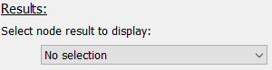
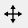
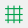
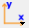

.._view_results_frame:
View workflow results frame#
The View workflow results frame is very similar to the Run full workflow frame except that it does not allow to start the processing but to import results.
This frame allow to explore current and past results.
{kind=link}
The configuration on the left holds the following functions which will be described in more detail below:
Import results
Selecting the results to be displayed
Manually exporting results
Importing results#
Using the Import results from directory button in the top left of the frame opens a window to select a directory. The selected directory is scanned for pydidas-written node result files which will be imported.
Note
Importing results will also import Scan and Diffraction Experiment defintions into separate instances in the background. Therefore, the imported data is completely independent from any current processing.
Result selection#
Node results#
Results from individual nodes can be selected from the drop-down menu. Opening it will show a list of all nodes in the WorkflowTree with stored results (see image below).


Once a node has been selected, additional information for these node’s results will be displayed, see the image to the left.
Result Arrangement#

For some applications, it can be interesting to arrange the results not by scan shape but as a timeline, effictively collapsing all scan dimensions to a single frame index dimension. Changing between the two is done by selecting the corrsponding radio button item. This will also trigger an update of the results metadata, as seen on the image to the left. Note that the first dimension is now labelled Chronological scan points.
Result metadata#
The name of the plugin and the data label and unit are shown at the top of the metadata, followed by descriptions of the different data axes. The axes are labelled with scan or data, depending on whether the respective data axis has been defined in the scan or is an axis from the processed data. In addition, the label (either from the scan definition or from the plugin data dimension) is given with the number of points in this axis and the axis range.
Select plot type#
The user can select between 1-dimensional line plots or 2-dimensional images. Use 1D plot to plot a single line or group of 1D plots to plot multiple lines at once. 2D full axes and 2D data subset will display data in image form.
Result subset selection#
Data selection. In this example, the axes 1 will be used for the line plot. The axis zero is sliced at the index corresponding to the data value 0 and the axis two is sliced at the value 0.#
The Data selection radio buttons allow to toggle the selection of data between data values and axis indices. If axis indices are toggled, integer values must be used for the selection. Data values must be given in the respective unit for each dimension (unit and range are given for each axis in the metadata window). Any data value will be converted to the closest matching index.
Depending on the selection, up to two drop-down menus are shown which allow to select the dimensions to be used in the plot. In addition, the slice points for additional dimensions must be specified (either as index or data value) to show the correct data subset. Multiple selections are possible when items are separated by commas. Ranges can be selected following the Python slicing syntax. Any duplicate entries will be discarded.
example |
python equivalent |
description |
|---|---|---|
1,2,4,5 |
[1, 2, 4, 5] |
The four individual points 1, 2, 4, 5 will be used. |
1:5 |
slice(1, 5) |
The slice includes all the values from 1..4 (note that the end point is not included). |
1,2,1:8:2 |
[1, 2, slice(4, 10, 2)] |
The numbers 1, 2 and a slice object which takes every second value from 3 to 10, i.e. 3, 5, 7, 9. |
: |
slice(0, n) |
The slice of the full dimension. |
Tip
The default data dimensions are zero (and one in case of a 2D image) and the default slices are all zero. These values usually need to be modified to show a useful plot or image.
Confirmation#
The “Confirm selection” button will process the inputs given above and will select the corresponding data subset and pass it to the plot widget.
Export of results#
The data export section allows users to export results either for the current node or for all nodes. The current node is the selected node for visualization.
Note
The export will always export the full node dataset, not just the subset which has been selected for display.
The first Parameter allows to select the export format(s). The second Parameter controls overwriting of results. If True, existing data files will be overwritten without any additional warning. If False and an existing file is detected, an Exception will be raised.
Clicking either the “Export current node results” or the “Export all results” button will open a dialogue to select the folder.
Note
To achieve naming consistency, it is not possible for the user to change the filenames of exported data, only the directory.
Data display#
1D and 2D data can be displayed using the two widgets described below.
Pydidas 1D plot#
The PydidasPlot1d is a
subclassed silx Plot1d
with additional features useful in pydidas.
{kind=link}
- The menu
The menu bar allows access to all generic silx and additional pydidas functionality. The detailed menu icons and actions are described below in the menu entries description.
- The plot display
This plot shows the data. Depending on the zoom level, this is either the full image or a sub-region.
- The position information
This widget displays the coordinates and data values of the data under the mouse cursor.
menu entries description#
menu icon |
description |
|---|---|

|
Zoom mode: clicking with the mouse and dragging spans a new selection of the data to be visualized. |
|  | Panning mode: clicking with the mouse and dragging moves the data on the canvas. |

|
Unzoom: Reset the display region to the full data. |
Activate autoscaling of the x-axis. If enabled, the x-axis will be matched to the data range upon activation or upon using the “Unzoom” button. |
|

|
Activate autoscaling of the y-axis. If enabled, the y-axis will be matched to the data range upon activation or upon using the “Unzoom” button. |

|
Switch between a linear and a logarithmic x-axis. |

|
Switch between a linear and a logarithmic y-axis. |
|  | Toggle a grid in the main plotting canvas. |

|
Change the drawing style. Repeatedly using this button will cycle through lines, dots, and lines & dots styles for the curve. |

|
Change the plotted data to the generic y vs. x plot without any special operations. |

|
Plot data in a Kratky-type plot using y * x^2 vs. x for the y and x-axis, respectively. This plot allows, for example, to correct for the q-dependence of the scattering intensity in small angle scattering. |

|
Copy the currently visible figure to the clipboard. |

|
Save the currently loaded full data to file, ignoring any zooming. This function will open a dialogue to select the file type and filename. Depending on the selected file type, the colormap and scaling will be retained (e.g. for png export) or ignored (e.g. tiff export). |

|
Print the currently visible figure. This will print the current canvas (and therefore only the data visible on the canvas). |
Pydidas 2D plot#
The PydidasPlot2d is a
subclassed silx Plot2d
with additional features useful in pydidas.

- The menu
The menu bar allows access to all generic silx and additional pydidas functionality. The detailed menu icons and actions are described below in the menu entries description.
- The image display
This widget shows the image data. Depending on the zoom level, this is either the full image or a sub-region.
- The colorbar
The colorbar shows the reference for the used colormap to map data levels to colors.
- The position information
This widget displays the coordinates and data values of the data under the mouse cursor.
Two-dimensional plots are presented in a silx Plot2D widget. The toolbar options will be explained in detail below. Moving the mouse over the canvas will update the labels for x/y position and data value at the bottom of the canvas. Note that the x and y axis positions for each pixel are defined at the pixel center and the given values must be treated carefully with respect to the pixel shape, especially for coarse pixels.
Tip
The scaling of the results can be achieved by modifying the colormap settings.
menu entries description#
menu icon |
description |
|---|---|
|
|
Zoom mode: clicking with the mouse and dragging spans a new selection of the data to be visualized. |
Panning mode: clicking with the mouse and dragging moves the data on the canvas. |
|
|
|
Unzoom: Reset the display region to the full data. |

|
Match canvas: Set the aspect ratio to 1 and match the canvas size to the data to allow a tight fit. |

|
Expand canvas: Reset the canvas size to take up all available space. This option does also change the data aspect to make use of the full canvas. |
Open the colormap editor. This button opens a window with selections for the colormap and scaling of the displayed minimum and maximum values. |
|

|
Crop histogram outliers: Calculate the histogram of the image and set the colormap to ignore the low x% and the top *y% of the image histogram. The levels of x and y can be adjusted in the pydidas user settings. |

|
Autoscale the colormap to the image mean value +/- 3 standard deviations. |

|
This action allows to control the aspect of the displayed data and allows to stretch the data to fill the available canvas or keep its original aspect ratio. |

|
Control the position of the origin in the image: Select between the top left and bottom left corner. |

|
Display or hide the colorbar on the drawing canvas. |

|
Mask tools: This button opens an additional widget at the bottom of the canvas with tools for importing or setting a mask to mask certain data regions. |
|  | Set coordinate system: This button will open a submenu which allows to
select the coordinate system (cartesian or cylindrical). Note that the
cylindrical coordinate system use the global |

|
Get information for selected datapoint: This button will allow the user to click on a point in the image and show a window with additional information about this point (specifically: all indices / data values). |
|
|
Copy the currently visible figure to the clipboard. This will only copy the main figure and not the colorbar. |
|
|
Save the currently loaded full data to file, ignoring any zooming. This function will open a dialogue to select the file type and filename. Depending on the selected file type, the colormap and scaling will be retained (e.g. for png export) or ignored (e.g. tiff export). |
|
|
Print the currently visible figure. This will print only the data visible on the canvas and it will retain colormap and scaling settings. |

|
Create and delete line profiles. This function allows the selection and editing of line profiles. The line profiles are shown in the histograms plots for the vertical and horizontal, respectively. |